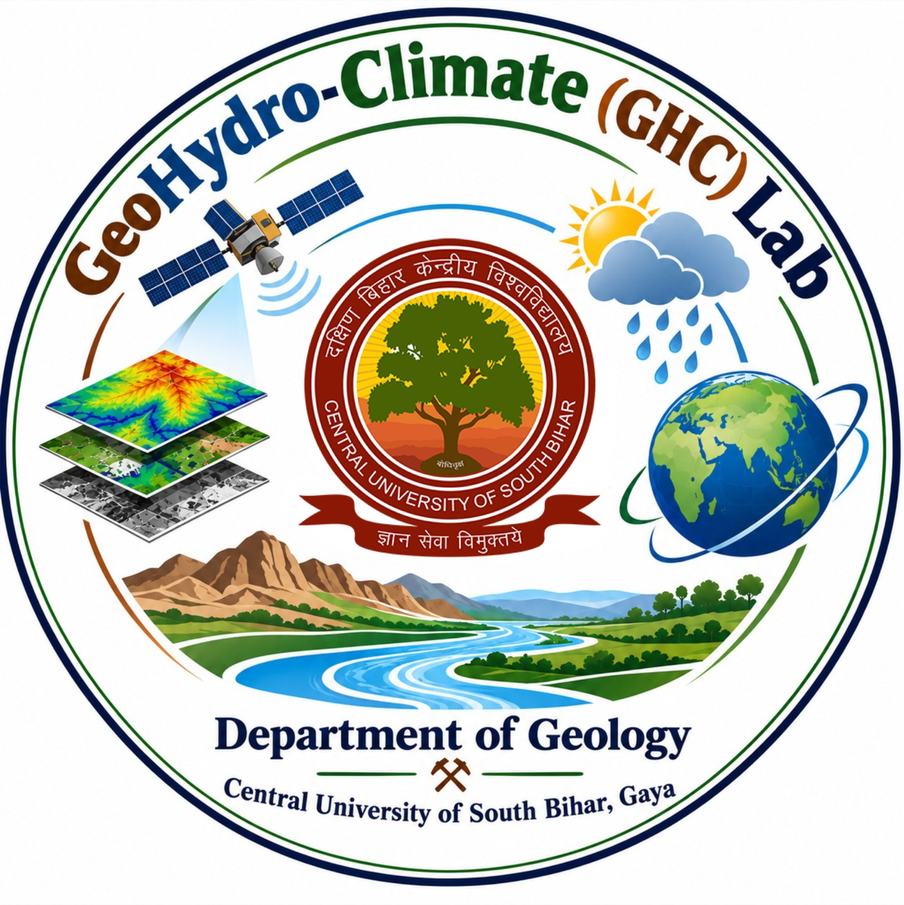
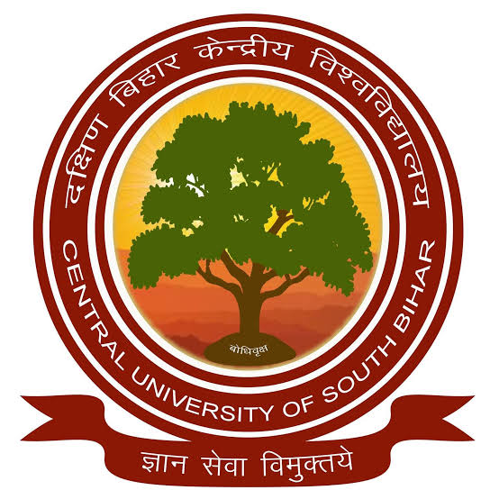
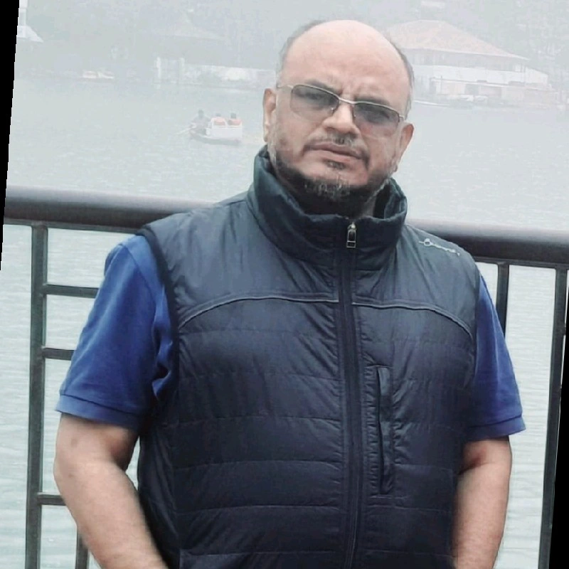
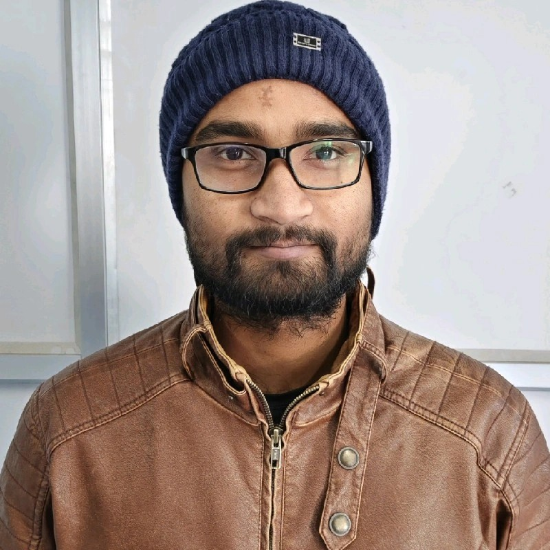

Karmanasa River Basin
Integrated flood-risk assessment using Earth observation, hydrological modelling, climate scenarios and machine learning.


Advancing geospatial science for water, climate, hazards and sustainable communities through interdisciplinary research, Earth observation and data-driven modelling.
The GeoHydro-Climate Lab is an interdisciplinary research group at the intersection of geology, hydrology and climate science dedicated to investigating the complex relationships between the earth, water systems and climate. The overarching goal of the GeoHydro-Climate lab is to observe, analyse, model and understand earth systems to identify pathways towards climate-resilient and sustainable resource management.
We combine Hydrological and Geomorphological analysis, Field investigation, Laboratory analysis, GIS, Remote Sensing and Machine Learning to investigate complex environmental systems.
Our research spans environmental processes, hazards, geospatial technologies and community resilience.
Hydrological processes, Watershed dynamics, Groundwater and hydro-climatic variability.
Flood hazard, vulnerability, exposure, susceptibility and risk assessment.
Earth observation, spatial modelling, geospatial analysis and landscape monitoring.
Explainable and data-driven approaches for Hydrological, Environmental and Geoscience applications.
Geomorphic processes, Erosion, Sediment dynamics and multi-hazard assessment.
Climate variability, Future scenarios and interactions between climate and Earth systems.
Urban morphology, environmental change, heat and risk in rapidly changing landscapes.
Community resilience, Socio-Economic, ecosystem services and geospatial decision support for sustainability.
Integrated flood-risk assessment using Earth observation, hydrological modelling, climate scenarios and machine learning.
Integrated Groundwater management through Hybrid approaches.
Multi-source geospatial modelling of Groundwater prospects, Wetlands, Climate Dynamics and Hydrogeological variability.
Integrated Groundwater management through Hybrid approaches.
Multi-source geospatial modelling of Groundwater prospects, Wetlands, Climate Dynamics and Hydrogeological variability.
GHC Lab supports collaborative research, doctoral work, student projects and hands-on geospatial learning.

Department of Geology (HEAD)
Principal Investigator
Geospatial science · Hydrology · Climate · Geohazards · AI/ML
Practical training, field studies, GIS and remote sensing applications



Multiparameter probe for pH, EC, TDS, Temperature and Dissolved Oxygen, hydrological and geospatial field investigations.
Hands-on learning in GIS, remote sensing, geospatial modelling and research workflows.
ArcGIS, QGIS, GeoMedia, Erdas Imagine for Spatial Analysis and Geochemical plotting Softwares(Piper, Gibbs).
Knowledge exchange through academic discussions, demonstrations and collaborative activities.
Participation in Earth Day, World Environment Day, plantation and community-oriented activities.
For research collaboration, student opportunities, training, academic activities or geospatial research discussions, contact the Department of Geology.